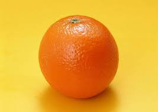
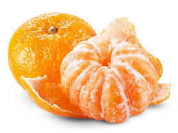

中部
|  |  |
水果介紹 :
橘的果形扁圓，紅或黃色，皮薄而光滑易剝，味微甘酸。柑和橘雖有區別，但在日常語言中常混用，如廣柑也說廣橘，蜜橘也說蜜柑。
如何挑選 :
看看橘子蒂上的葉子，葉子越新鮮，也說明橘子越好。光滑程度。甜酸適中的橘子大都表皮光滑，且上面的油胞點比較細密。測試彈性。皮薄肉厚水分多的橘子都會有很好的彈性，用手捏下去，感覺果肉結實但不硬，一鬆手，就能立刻彈回原狀。
營養價值 :
果肉中富含β-胡蘿蔔素、橘紅素、礦物質、多酚類、胺基酸、果膠，有機酸等，果皮中則含有檸檬烯，維他命A、B、C、D，富含的礦物質、β-胡蘿蔔素。
果園介紹 :